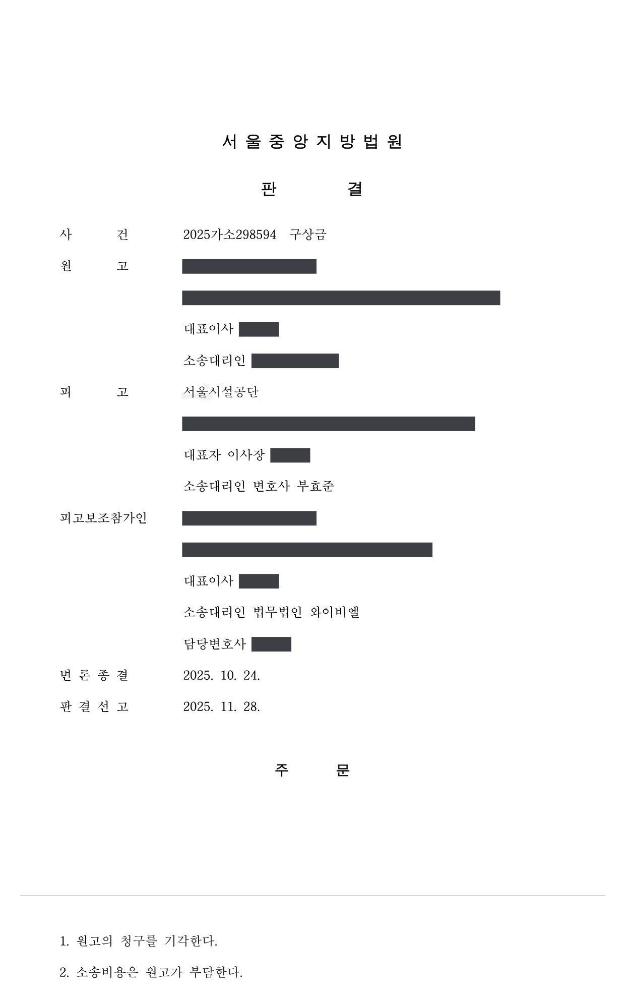
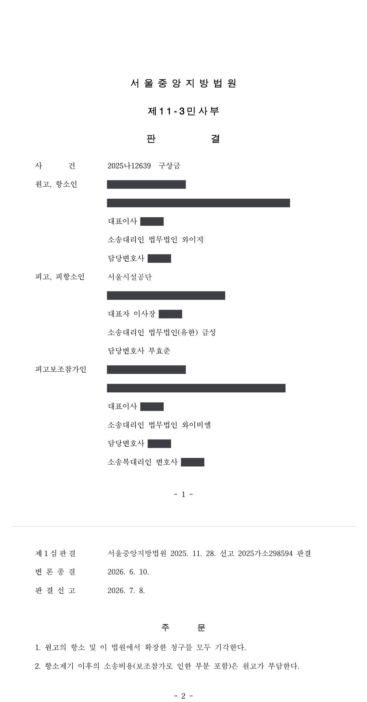

도로 공사구간 교통사고 구상금 청구소송 (1·2심)
서울중앙지방법원 2025가소298594 · 2025나12639 · 담당변호사 부효준
판결문


사건의 요지
도로 공사구간에서 발생한 교통사고에 관하여 보험회사가 도로 관리기관을 상대로 제기한 구상금 청구에서, 교통안전시설의 설치·관리상 하자가 다투어진 사건입니다.
사건의 주요 내용
원고 보험회사는 자동차전용도로에서 사고를 낸 차량의 보험자입니다. 피고 공단은 2024년 5월 공사업체(피고보조참가인)를 대표자로 하는 공동수급체와 교량 포장·개량공사 계약을 체결하였고, 공사업체는 사고 장소를 포함한 도로 구간의 공사를 진행하여 2024년 12월 완공하였습니다.
2024년 11월 새벽 0시 22분경 원고 차량이 편도 5차로 가운데 1차로로 직진하던 중, 앞서 가던 차량이 공사구간을 예고하기 위하여 주의구간에 설치된 라바콘을 보고 서행하였습니다. 원고 차량은 2차로로 진로를 바꾸어 피하려 하였으나 피하지 못하고 선행차량의 뒤를 들이받았습니다. 원고는 두 차량의 운전자·동승자 치료비와 합의금, 두 차량의 수리비로 합계 54,407,380원의 보험금을 지급하였습니다.
원고는 상법 제682조의 보험자대위에 따라 피고 공단을 상대로 구상금을 청구하였습니다. 1심에서는 13,598,052원을 구하였고, 1심에서 패소한 뒤 항소심에서 청구를 확장하여 지급 보험금의 40%(피고 측 책임비율이라고 주장한 비율)에 해당하는 21,762,952원과 지연손해금을 구하였습니다. 부효준 변호사는 1심과 항소심에서 피고 공단을 대리하였습니다.
쟁점
- 공사구간 전방에 설치된 공사안내판·우회 지시표지·점멸 라바콘 등에 비추어 교통안전시설의 설치·관리상 하자를 인정할 수 있는지
- 사고가 도로 관리기관과 공사업체의 안전관리상 하자 때문이 아니라 원고 차량 운전자의 전방주시의무 위반으로 발생한 것인지
원고의 주장
- 공사업체(피고보조참가인)는 도로 공사를 하면서 교통안전시설물을 제대로 설치하지 않은 과실이 있고, 피고 공단은 공사의 관리 주체로서 관리감독 의무를 소홀히 한 과실이 있으므로, 사고는 피고 측의 과실과 원고 차량 운전자의 과실이 경합하여 발생하였다고 주장하였습니다.
- 선행차량이 급정거하였고, 첫 번째 라바콘 설치 지점 이전에 경광등·방지턱·방호벽·에어기둥·사인보드카·신호수를 설치하였어야 한다고 주장하면서, 지급한 보험금 가운데 피고 측 책임비율 40%에 해당하는 금액을 구상금으로 구하였습니다.
부효준 변호사의 주장
- 공사업체는 관할 경찰서에 도로 공사를 신고하고 그 교통처리계획에 따라 공사구간 4km 전부터 100m 전까지 구간별 공사안내판, 전방 500m·100m 지점의 차로 감소 우회 지시표지, 점멸조명이 붙은 라바콘을 설치하였으며, 공사구간에는 방호벽·사인카·신호수를 배치하였으므로 교통안전시설의 설치·관리에 하자가 없다고 반박하였습니다. 이를 신고서와 사진 등 증거(을가 제3 내지 16호증)로 입증하였습니다.
- 사고 장소는 자동차전용도로의 직선 구간이고 사고 시각은 통행이 많지 않은 심야였으며 가로등도 밝았으므로, 운전자가 전방주시의무만 지켰다면 공사안내표지와 점멸 라바콘을 충분히 알아볼 수 있었고, 사고는 원고 차량 운전자의 일방 과실로 일어났다고 주장하였습니다. 또한 사고 영상(갑 제3, 4호증)에 따르면 선행차량은 급정거한 것이 아니라 서행 중이었다는 점도 지적하였습니다.
법원의 판단
1심(소액사건)은 공사업체가 공사구간 4km 전부터 구간별로 공사안내판을 설치하고 전방 500m와 100m 지점에 우회 지시표지를 설치한 점, 공사구간 시작 전에 점멸조명 라바콘을 일정한 간격으로 설치한 점, 사고 장소가 자동차전용도로의 직선 구간이고 심야여서 통행이 적었으며 가로등이 밝았던 점을 들어, 사고는 공사업체의 안전관리상 하자가 아니라 원고 차량 운전자의 전방주시의무 위반에 따른 일방 과실로 발생하였다고 보아 원고의 청구를 기각하였습니다.
항소심은 공사업체가 관할 경찰서에 제출한 도로 공사 신고 내용(지시표지 2개, 공사안내판 5개, 교통안내판 1개, 라바콘 200개, 발광싸인보드 4대, 경광등 1개, 신호수 3명 배치)과 그에 따른 실제 설치 사실을 인정하였습니다. 원고가 라바콘 이전에 방호벽·경광등 등을 먼저 설치하였어야 한다고 주장한 데 대하여는, 신고 내용에 그러한 사항이 없고 주의구간의 라바콘보다 앞에 그런 시설물을 두는 것이 오히려 사고 위험을 높일 수 있다고 보았습니다.
이에 따라 항소심은 이 사고가 피고 공단과 공사업체의 안전관리상 하자로 발생한 것이 아니라 원고 차량 운전자의 전방주시의무 위반으로 발생하였다고 판단하고, 원고의 항소와 항소심에서 확장한 청구를 모두 기각하였습니다. 항소 제기 이후의 소송비용(보조참가로 인한 부분 포함)은 원고가 부담하게 되었습니다.
③ 이 사건 사고 장소는 자동차전용도로의 직선 구간이고, 사고 시간도 차량의 통행이 많지 않은 00:22경이었으며, 가로등 불빛도 밝았는바, 차량 운전자가 전방주시의무만 제대로 이행하였다면 공사안내표지와 점멸조명 라바콘을 충분히 인지할 수 있었을 것으로 보이는 점 등을 종합하여 볼 때, 이 사건 사고는 이 사건 공사를 진행한 피고 및 피고보조참가인의 안전관리상 하자로 인해 발생한 사고로 볼 수 없고, 원고 차량 운전자의 전방주시의무 위반으로 인해 발생한 사고로 봄이 타당하다. 따라서 이와 다른 전제에 선 원고의 청구는 나머지 점에 대하여 살필 필요 없이 이유 없다.
서울중앙지방법원 2025나12639 판결 이유 '2. 나. 구체적 판단'
원고는 첫 번째 라바콘 설치 지점 이전에 경광등, 방지턱, 방호벽, 에어기둥, 사인보드카, 신호수를 설치하여야 했다고 주장하나, 위 도로 공사 신고 내용에는 이러한 사항이 없고, 공사 구간을 사전에 예고하는 주의구간에 라바콘을 설치하기 전에 위와 같은 시설물을 바로 설치하는 것이 오히려 사고 위험성을 증가시킬 수 있다고 보인다.
서울중앙지방법원 2025나12639 판결 이유 '2. 나. 구체적 판단' 각주 2)
※ 판결 이유 가운데 이 사건의 판단 기준이 된 부분을 그대로 옮긴 것으로, 당사자 이름 등은 가렸습니다.
이 사건이 보여 주는 것
도로 공사구간에서 난 사고를 두고 보험회사가 도로 관리기관을 상대로 구상금을 청구하는 사건에서는, 관할 경찰서에 신고한 교통처리계획과 실제 설치 내역(안내판의 위치와 거리, 우회 지시표지, 점멸 라바콘, 신호수 배치 등)이 일치한다는 점을 신고서·사진 등으로 입증하는 것이 방어의 핵심입니다. 공사를 맡은 업체를 보조참가시켜 함께 자료를 내는 것도 도움이 됩니다.
법원은 시설물의 설치 여부만이 아니라 도로의 형태(직선 구간), 사고 시각의 통행량, 가로등 등 조명 상태를 함께 보아 운전자가 시설물을 알아볼 수 있었는지를 판단합니다. 이러한 사정이 갖추어지면 사고는 운전자의 전방주시의무 위반에 따른 것으로 보아 관리기관의 책임이 부정될 수 있습니다.
비슷한 처분을 받으셨다면
행정처분은 처분이 있음을 안 날부터 90일 이내에 행정심판이나 취소소송으로 다투어야 하고, 기간이 지나면 돌이킬 수 없는 처분은 집행정지를 서둘러야 합니다. 처분서를 받은 날짜부터 확인해 드립니다.